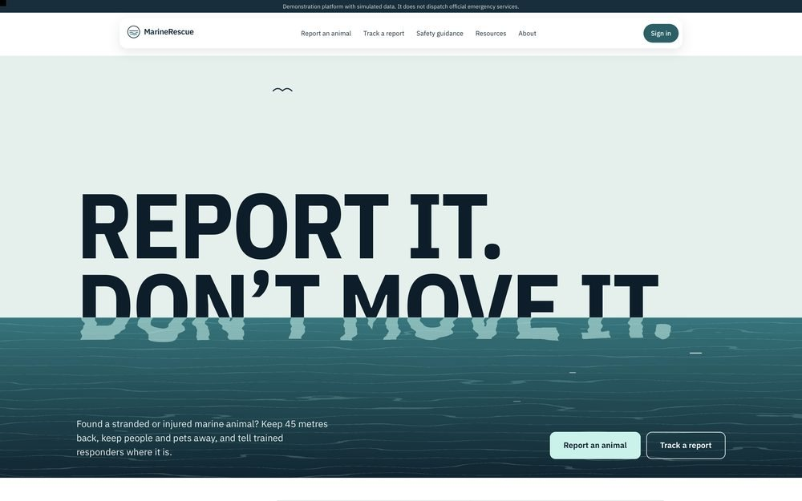

The headline is the instruction
“Report it. Don’t move it.” sits right on the home page, followed by the two rules that matter: keep 45 metres back and keep people and pets away. Reporting is the main action.
Case study — Marine wildlife stranding platform
When people find a stranded marine animal, they try to help — and often make it worse. The interface starts with the instruction.

The problem
People who find a stranded animal often try to move it, or don’t know who to tell. Every minute spent guessing is a minute rescuers lose.
What made it hard
Three decisions
“Report it. Don’t move it.” sits right on the home page, followed by the two rules that matter: keep 45 metres back and keep people and pets away. Reporting is the main action.
Role-based access gives reporters a simple form and status tracking, while coordinators, rescue teams and admins each see the tools for their job.
New reports appear on a shared map in real time over Server-Sent Events, so responders don’t have to reload to see what changed.
4
user roles, each with its own view
Live
map updates over Server-Sent Events
axe
accessibility checks in the test suite
3
test layers: Vitest, Playwright, axe
What I learned
Service design is mostly about who needs to know what, and when. A clear banner saying the data is simulated was also a design decision — being honest about what a product is builds more trust than polish.
Built with
Tim · timwinchester16@gmail.com · GitHub · LinkedIn